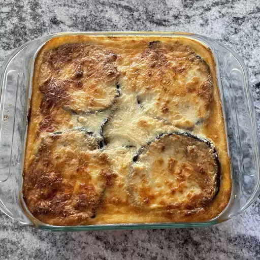

Moussaka

Moussaka is an eggplant- or potato-based dish, often including ground meat, which is common in the Balkans and the Middle East, with many local and regional variations.
Many wonder what the difference is between moussaka and lasagna, and it's quite simple! Lasagna is made with layers of pasta, while moussaka is made with layers of vegetables. There are variations of eggplant moussaka, some use potatoes or even zucchini squash.
Ingredients
- 3 eggplants, peeled and cut lengthwise into 1/2 inch thick slices
- Salt to taste
- ¼ cup olive oil
- 1 tablespoon butter
- 1 pound lean ground beef
- 2 onions, chopped
- 1 clove garlic, minced
- Ground black pepper to taste
- 2 tablespoons dried parsley
- ½ teaspoon fines herbs
- ¼ teaspoon ground cinnamon
- ½ teaspoon ground nutmeg, divided
- 1 (8 ounce) can tomato sauce
- ½ cup red wine
- 1 egg, beaten
- 4 cups milk
- ½ cup butter
- 6 tablespoons all-purpose flour
- Ground white pepper, to taste
- 1 ½ cups freshly grated Parmesan cheese